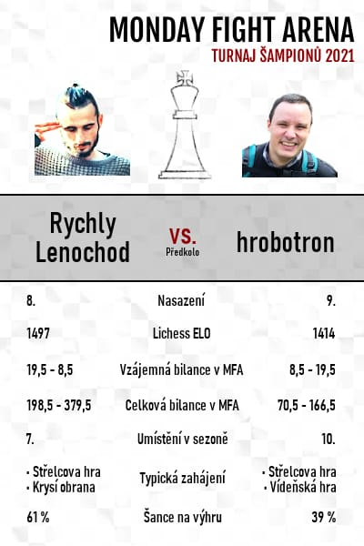
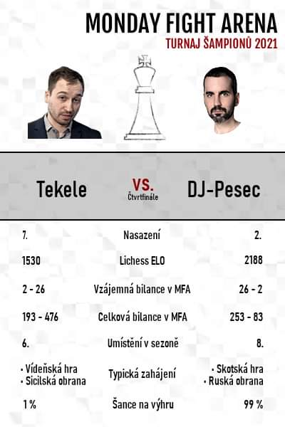
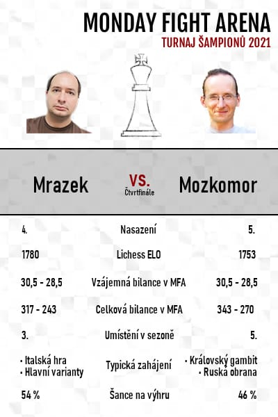
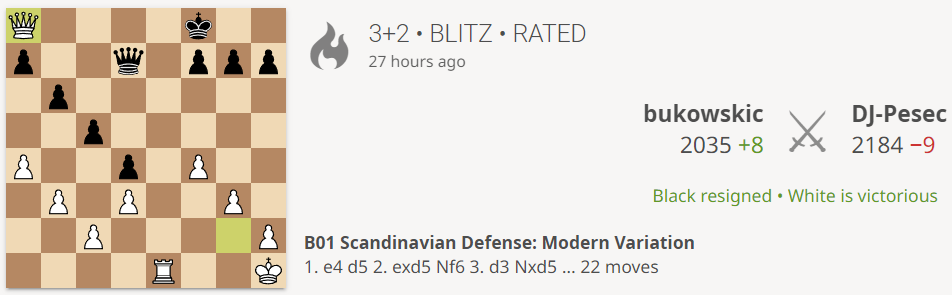

Turnaj šampionů
Na závěr roku se uskutečnil turnaj, kde se deset hráčů z čela tabulky utkalo ve vyřazovacích turnajích.
Hrálo se v MondayFight tempu 3+2, vždy 6 partií. Pokud by boj skončil nerozhodně,
pokračovalo by se dvěma Bullet partiemi v tempu 2+1. Toto štěstí nám letos nebylo dopřáno.
Matche nebyly hrány v turnaji, proto je nelze v systému těchto webových stránek dohledat.
Přinesl turnaj nějaká překvapení, ňáká nečekaná vítězství? To sice ano, ale kam se to hrabe na překvapení v podobě epesních
vyzyvatelských kartiček, kterými pánové DJ-Pesec a Jouzolean
vábili hráče k šachovnicím...



Na loňské Bébulovo kafrání bylo letos vzpomenuto a párování hráčů bylo zvoleno novým způsobem - totiž podle
průměrné performance za rok 2021. To posunulo Bukowskice na první místo a mohl tak být nasazený jako jednička,
jak se na celkového vítěze Monday Fights 2021 turné sluší, ačkoli podle ratingu byl až hluboko pod DJ-Pescem, který
byl, přes slabou účast na turnajích, nasazen po zásluze jako druhý.
Bukowskic vstoupil do turnaje vymrzlý z běžkování a měl štěstí, že nenarazil hned na Mrázka, protože to by se zbytek
turnaje už odehrál bez jeho drtivé přítomnosti. Hned první dvě partie s RychlymLenochodem dostal výprask, jaký
dlouho nezažil, ale pak stihnul roztát, obvody se zahřály, panely se dovřely, kontakty se propojily a síla Malého Boha vzrostla.
Následující 4 hry už vyhrál, ačkoli v jedné měl Lenochod Buka na talíři. Veliká škoda!
To by byla bžunda, kdyby se nakonec vítězný šampion musel z prvního kola vysekávat přes Bulletový rozstřel.
Již rozehřátý, narazil náš hrdina na Mrázka. Chlad vanul silný a v obvodech to zajiskřilo. Mrázek sehrál s Bukowskicem
moc pěkný zápas a boj to byl tuhý. Nakonec Mrázek uhrál dvě výhry, stejně jako před ním Lenochod a všichni se těšili,
jak dopadne zápas s DJ-Pescem, jehož rating na začátku turnaje neutrpěl žádných drastických propadů a
s odrbaným Bukowskicem začínal finálový souboj s hrozivým ratingem 2189 proti 2031. To je zhruba rozdíl mezi
Jouzoleanem a Bébulkem, a věřte mi, to se hraje věru nesnadno.
Finále začalo velmistrovsky, totiž dvěma remízami, což naše PlayOff krom těchto cápků ještě nezažilo. A pak se země
zatřásla poprvé a tlaková vlna oběhla Zeměkouli, když DJ-Pesec svým blunderem na posledním ranku dovolil bukowskicovi
bez námahy vyhrát.

Následovala další remíza, ve které měl Bukowskic z pekla štěstí. No a pak ze země zatřásla podruhé,
tlaková vlna oběhla Zeměkouli dvakrát a v táboře obhájce titulu se mohlo slavit.
-beb-